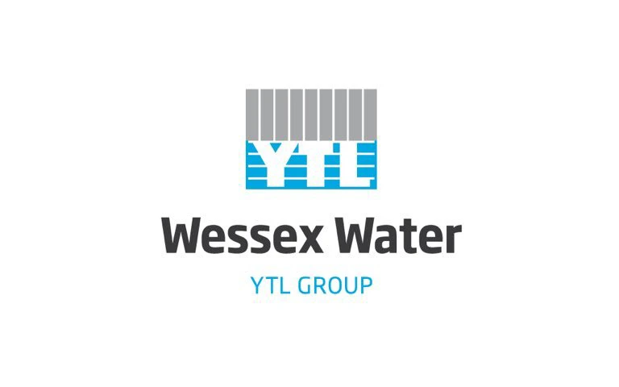
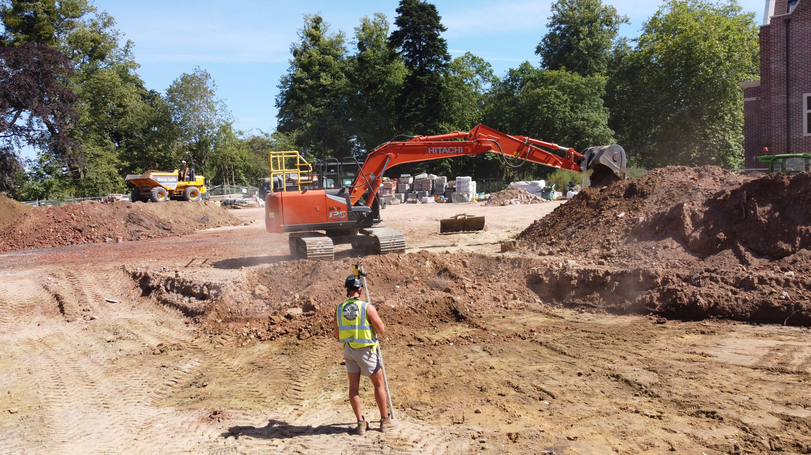

Start Your Project
Let's Break Ground
Get in touch with our friendly team in Dorset for a free, no-obligation quote.
Get a Free QuoteA family-run groundworks and civil engineering contractor built on over a decade of hands-on experience.
D&C Groundworks & Civils Ltd is a family-run groundworks and civil engineering contractor based in Christchurch, delivering domestic and commercial projects across Bournemouth, Poole and the wider Dorset region. Founded on over a decade of hands-on industry experience, we provide a complete groundworks service — from site clearance and excavation through to foundations, drainage and finished surfaces.
A significant proportion of our work comes through referrals and returning clients who value our quality, transparent pricing and dependable delivery. When you work with D&C, you deal directly with the team doing the work.
Family-run, fully insured and Dorset-based — the same team from first dig to final handover.
Much of our work comes through word of mouth, and that's no accident. We build lasting relationships through honest advice, clear communication and a job done right — so clients return, and recommend us.
With over a decade of hands-on experience across domestic and commercial groundworks, there's little we haven't tackled — from garden dig-outs and drainage to foundations, driveways and full site works.
Fully insured and committed to health and safety on every site, we manage each project from first consultation to final handover — turning up when we say we will, and leaving every site clean and safe.

Approved to carry out water and sewer connections to Wessex Water standards across our Dorset region.

Get in touch with our friendly team in Dorset for a free, no-obligation quote.
Get a Free Quote